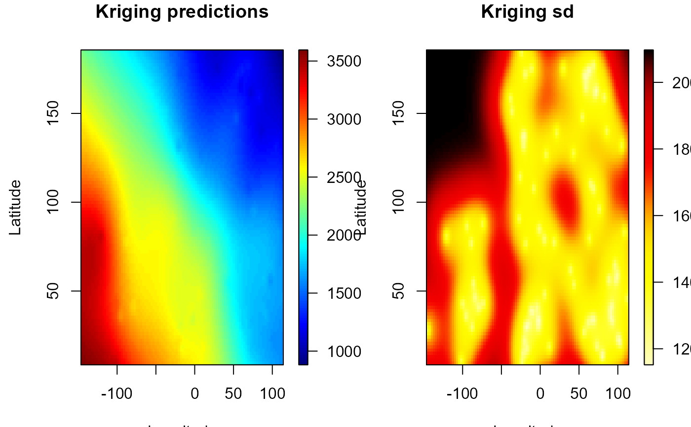

Compute simple kriging or residual kriging predictions (and also the corresponding simple kriging standard errors ). Currently, only global (residual) simple kriging is implemented.
np.kriging(object, ...)
# S3 method for default
np.kriging(
object,
svm,
lp.resid = NULL,
ngrid = object$grid$n,
intermediate = FALSE,
...
)
# S3 method for np.geo
np.kriging(object, ngrid = object$grid$n, intermediate = FALSE, ...)
kriging.simple(x, y, newx, svm, intermediate = FALSE)object used to select a method:
local polynomial estimate of the trend (class locpol.bin)
or nonparametric geostatistical model (class extending np.geo).
further arguments passed to or from other methods.
semivariogram model (of class extending svarmod).
residuals (defaults to residuals(object)).
number of grid nodes in each dimension.
logical, determines whether the intermediate computations
are included in the output (component kriging; see Value).
These calculations can be reused, e.g. for bootstrap.
vector/matrix with data locations (each component/row is an observation location).
vector of data (response variable).
vector/matrix with the (irregular) locations to predict
(each component/row is a prediction location).
or an object extending grid.par-class
(data.grid).
np.kriging(), and kriging.simple() when newx defines
gridded data (extends grid.par or data.grid classes),
returns an S3 object of class krig.grid (kriging results + grid par.).
A data.grid object with the additional (some optional) components:
vector or array (dimension $grid$n) with the kriging predictions.
vector or array with the kriging standard deviations.
(if requested) a list with 4 components:
lambda matrix of kriging weights (columns correspond with predictions
and rows with data)).
cov.est (estimated) covariance matrix of the data.
chol Cholesky factorization of cov.est.
cov.pred matrix of (estimated) covariances between data (rows)
and predictions (columns).
When newx is a matrix of coordinates (where each row is a prediction location),
kriging.simple() returns a list with the previous components (kpred, ksd
and, if requested, kriging).
geomod <- np.fitgeo(aquifer[,1:2], aquifer$head)
krig.grid <- np.kriging(geomod, ngrid = c(96, 96)) # 9216 locations
old.par <- par(mfrow = c(1,2))
simage(krig.grid, 'kpred', main = 'Kriging predictions',
xlab = "Longitude", ylab = "Latitude", reset = FALSE )
simage(krig.grid, 'ksd', main = 'Kriging sd', xlab = "Longitude",
ylab = "Latitude" , col = hot.colors(256), reset = FALSE)

par(old.par)